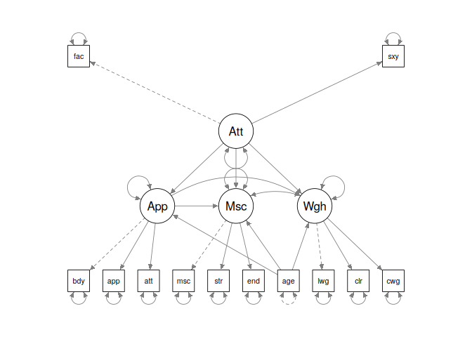

The goal of rmedsem is to conduct a mediation analysis based on a structural equation model (SEM), including observed and/or latent variables as well as combination of observed and latent variables. The package supports:
- covariance-based SEM estimated with the lavaan package
- PLS-SEM estimated using cSEM
- Bayesian SEM estimated using blavaan
Currently, only continuous independent and mediator variables are supported. See this article for technical details on the estimation procedure used.
See the examples in the section below and refer to the rmedsem() documentation. Examples covering the different estimation methods (CB-SEM, PLS-SEM, Bayesian SEM) are detailed in this article.
Installation
You can install the development version of rmedsem from GitHub with:
# install.packages("devtools")
devtools::install_github("ihrke/rmedsem")Getting started
We start with a simple example using the hsbdemo dataset included in rmedsem. In this model, we include only observed variables and have a simple case in which mathematical skills math directly affect performance in science-related areas science and where part of this association is mediated thrugh their abiliy to read.
We can express this model in lavaan syntax as follows:
mod.txt <- "
read ~ math
science ~ read + math
"Once specified, we can use lavaan to fit the model using CB-SEM:
We can inspect the estimated coefficients using lavaans methods (summary() etc). To run the mediation analysis, we use rmedsem() and specify the independent variable (indep="math"), the mediator (med="red") and the dependent variable (dep="science"). The output is captured in an output object out which implements a printing function (print.rmedsem()) to show a summary of the results:
library(rmedsem)
out <- rmedsem(mod, indep="math", med="read", dep="science")
print(out)
#> Significance testing of indirect effect (unstandardized)
#> Model estimated with package 'lavaan'
#> Mediation effect: 'math' -> 'read' -> 'science'
#>
#> Sobel Delta Monte-Carlo
#> Indirect effect 0.2649 0.2649 0.2649
#> Std. Err. 0.0522 0.0523 0.0519
#> z-value 5.0732 5.0597 5.0608
#> p-value 3.91e-07 4.2e-07 4.17e-07
#> CI [0.163, 0.367] [0.162, 0.367] [0.164, 0.374]
#>
#> Baron and Kenny approach to testing mediation
#> STEP 1 - 'math:read' (X -> M) with B=0.725 and p=0.000
#> STEP 2 - 'read:science' (M -> Y) with B=0.365 and p=0.000
#> STEP 3 - 'math:science' (X -> Y) with B=0.402 and p=0.000
#> As STEP 1, STEP 2 and the Sobel's test above are significant
#> and STEP 3 is not significant the mediation is complete.
#>
#> Effect sizes
#> RIT = (Indirect effect / Total effect)
#> (0.265/0.667) = 0.397
#> Meaning that about 40% of the effect of 'math'
#> on 'science' is mediated by 'read'
#> RID = (Indirect effect / Direct effect)
#> (0.265/0.402) = 0.659
#> That is, the mediated effect is about 0.7 times as
#> large as the direct effect of 'math' on 'science'The result reports the estimated indirect effect using the Sobel, Delta and Monte-Carlo methods (see technical details) and also explains the Baron-Kenny procedure in detail.
We can switch to an alternative method by Zhao, Lynch & Chen (2010) using the approach="zlc" option (here we also switched to standardized coefficients using standardized=T):
rmedsem(mod, indep="math", med="read", dep="science",
standardized=T, approach = "zlc")
#> Significance testing of indirect effect (standardized)
#> Model estimated with package 'lavaan'
#> Mediation effect: 'math' -> 'read' -> 'science'
#>
#> Sobel Delta Monte-Carlo
#> Indirect effect 0.2506 0.2506 0.2506
#> Std. Err. 0.0456 0.0456 0.0464
#> z-value 5.5006 5.4935 5.4706
#> p-value 3.79e-08 3.94e-08 4.48e-08
#> CI [0.161, 0.34] [0.161, 0.34] [0.164, 0.358]
#>
#> Zhao, Lynch & Chen's approach to testing mediation
#> Based on p-value estimated using Monte-Carlo
#> STEP 1 - 'math:science' (X -> Y) with B=0.380 and p=0.000
#> As the Monte-Carlo test above is significant, STEP 1 is
#> significant and their coefficients point in same direction,
#> there is complementary mediation (partial mediation).
#>
#> Effect sizes
#> RIT = (Indirect effect / Total effect)
#> (0.251/0.631) = 0.397
#> Meaning that about 40% of the effect of 'math'
#> on 'science' is mediated by 'read'
#> RID = (Indirect effect / Direct effect)
#> (0.251/0.380) = 0.659
#> That is, the mediated effect is about 0.7 times as
#> large as the direct effect of 'math' on 'science'We can also apply rmedsem() to more complex SEM’s that contain both latent and observed variables:
model03 <- "
Attractive =~ face + sexy
Appearance =~ body + appear + attract
Muscle =~ muscle + strength + endur
Weight =~ lweight + calories + cweight
Appearance ~ Attractive + age
Muscle ~ Appearance + Attractive + age
Weight ~ Appearance + Attractive + age
"
mod <- sem(model03, data=rmedsem::workout) Here, we have latent variables Appearance, Attractiveness, Muscle and Weight that measure the motivation of people going to a gym to workout.
This model features several complex mediation pathways. We can use rmedsem() to investigate those one by one. We start by considering the pathway Attractive -> Appearance -> Muscle (the more attractive the person perceives her/himself, the more this will indirectly influence her/him to want to work out more to build up muscles):
rmedsem(mod, indep="Attractive", med="Appearance", dep="Muscle",
approach = c("bk","zlc"))
#> Significance testing of indirect effect (unstandardized)
#> Model estimated with package 'lavaan'
#> Mediation effect: 'Attractive' -> 'Appearance' -> 'Muscle'
#>
#> Sobel Delta Monte-Carlo
#> Indirect effect 0.1196 0.1196 0.1196
#> Std. Err. 0.0589 0.0601 0.0544
#> z-value 2.0305 1.9909 2.0717
#> p-value 0.0423 0.0465 0.0383
#> CI [0.00416, 0.235] [0.00186, 0.237] [0.0259, 0.219]
#>
#> Baron and Kenny approach to testing mediation
#> STEP 1 - 'Attractive:Appearance' (X -> M) with B=0.287 and p=0.022
#> STEP 2 - 'Appearance:Muscle' (M -> Y) with B=0.417 and p=0.000
#> STEP 3 - 'Attractive:Muscle' (X -> Y) with B=-0.025 and p=0.850
#> As STEP 1, STEP 2 and the Sobel's test above are significant
#> and STEP 3 is not significant the mediation is complete.
#>
#> Zhao, Lynch & Chen's approach to testing mediation
#> Based on p-value estimated using Monte-Carlo
#> STEP 1 - 'Attractive:Muscle' (X -> Y) with B=-0.025 and p=0.850
#> As the Monte-Carlo test above is significant and STEP 1 is not
#> significant there indirect-only mediation (full mediation).
#>
#> Effect sizes
#> RIT = (Indirect effect / Total effect)
#> Total effect 0.094 is too small to calculate RIT
#> RID = (Indirect effect / Direct effect)
#> (0.120/0.025) = 4.714
#> That is, the mediated effect is about 4.7 times as
#> large as the direct effect of 'Attractive' on 'Muscle'Similarly, we could investigate the pathway Attractive -> Appearance -> Weight (the more attractive the person perceives her/himself, the more this will indirectly influence her/him to want to work out more to lose weight):
rmedsem(mod, indep="Attractive", med="Appearance", dep="Weight",
approach = "zlc")
#> Significance testing of indirect effect (unstandardized)
#> Model estimated with package 'lavaan'
#> Mediation effect: 'Attractive' -> 'Appearance' -> 'Weight'
#>
#> Sobel Delta Monte-Carlo
#> Indirect effect 0.224 0.224 0.224
#> Std. Err. 0.103 0.104 0.102
#> z-value 2.177 2.158 2.188
#> p-value 0.0295 0.0309 0.0287
#> CI [0.0223, 0.425] [0.0205, 0.427] [0.0615, 0.442]
#>
#> Zhao, Lynch & Chen's approach to testing mediation
#> Based on p-value estimated using Monte-Carlo
#> STEP 1 - 'Attractive:Weight' (X -> Y) with B=-0.285 and p=0.057
#> As the Monte-Carlo test above is significant and STEP 1 is not
#> significant there indirect-only mediation (full mediation).
#>
#> Effect sizes
#> RIT = (Indirect effect / Total effect)
#> Total effect 0.062 is too small to calculate RIT
#> RID = (Indirect effect / Direct effect)
#> (0.224/0.285) = 0.784
#> That is, the mediated effect is about 0.8 times as
#> large as the direct effect of 'Attractive' on 'Weight'Note that these models involve latent variables. It is also possible to use a combination of latent and observed variables and to use different packages/estimation techniques to fit the models.